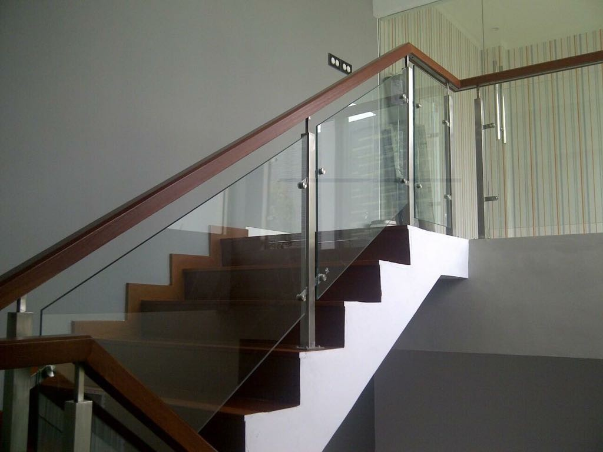

Kaca adalah salah satu material rumah yang pasti senantiasa ada, utamanya sebagai jendela. Kita acap kali menemui material-material tersebut pada gedung, kantor, industry malah rumah hunian. Sekarang sudah hadir banyak tipe kaca hingga lantai kayu jati yang bisa anda aplikasikan pada bangunan yang anda buat.
Tidak kaca tempered, kaca shower, kanopi kaca, parket kayu jati dan masih banyak lagi. Tiap-tiap kaca mempunyai fungsi masing-masing yang membikin banyak orang semakin mebutuhkannya dari hari ke hari. Berikut ini sedikit review mengenai kaca bagi sebuah banguanan, fungsi utama dan bagaiman memilih kaca yang sesuai untuk sebuah hunian bagus rumah, kantor maupun gedung. Akan di jelaskan juga mengenai lantai kayu jati terbaik yang bisa anda beli.
Distributor & Supplier Partisi Kaca di Langsa

Partisi kaca sekarang tidak hanya ditemui di perkantoran modern atau sentra perbelanjaan. Banyak rumah hunian yang sekatnya sekarang terbuat dari kaca. Belum lagi tarif pemasangan yang tak murah. yang satu ini tergantung lama cara kerja. Berbeda seandainya Anda memilih partisi kaca Langsa. Biaya pemasangan lebih murah karena waktu yang tak lama untuk memasang partisi yang terbuat dari kaca . Dengan harga yang betul-betul bersahabat cocok dengan kantong anda, Segera daripartisi kaca ini tak perlu diragukan lagi. kunjungi dis.or.id sekarang juga. Akan tetapi, Anda sepatutnya selektif dalam hal memilih kaca untuk partisi. Kecuali itu, figur partisi kaca Langsa ada yang frameless (tanpa pigura) dan juga ada yang menerapkan pigura. Partisi kaca dengan mutu terbaik dan berkwalitas bisa anda dapatkan di dis.or.id. Disana anda bisa menerima partisi kaca dengan harga yang sangat terjangkau. Disana anda akan mendapatkan partisi kaca yang sesuai dengan harapan anda.
Info Pemesanan Selengkapnaya
Google Maps: https://www.google.com/maps/d/viewer?mid=1R8kzChlMY2QK17rdE2QwzgHqdyqkVgbb&ll=-7.27380280025364%2C112.65243155000007&z=18
Note: https://www.facebook.com/notes/distributor-of-industrial-supply/pabrik-supplier-partisi-kaca-kamar-mandi-kantor-r-tamu-dlsb/1785723915060821/
Event: https://www.facebook.com/events/538733799826380/
Distributor & Supplier Kaca Shower
Kaca shower adalah kotak atau alat yang berfungsi sebagai penyekat ruang khusus untuk kamar mandi. Salah satu cara yang dapat diterapkan untuk menghasilkan kamar mandi yang senantiasa bersih adalah memakai shower sebab sistem pembersihannya memang jauh lebih praktis dibanding dengan yang memakai konsep bak mandi. Tentunya banyak kelebihan yang bisa di peroleh dari penggunaan kaca shower pada kamar mandi di rumah anda. Kelebihan shower screen dibanding dengan sistem penyekatan yang lain ialah dihasilkan dalam bentuk yang telah jadi dan tinggal dipasang saja. Apalagi kini telah ada kios penjual shower screen yang menjual produknya dalam metode satu paket termasuk pemasangannnya. Kita tak perlu repot lagi mencari tukang sendiri sebab pemasangan alat sekat ini memang membutuhkan teknik tersendiri.
Dis.or.id menyediakan kaca shower dengan mutu premium sehingga ketika dipasang akan lantas menonjol mewah. Disana anda bisa mendapatkan kaca shower yang berkualitas dan harga yang juga relatif murah.
Distributor, Supplier & Jasa Pasang Kanopi Kaca
Banyak macam kaca kanopi yang digunakan sebagai atap, tidak hanya satu jenis saja. Atap kaca skylight ditujukkan untuk menerima cahaya alami UV yang memiliki fungsi sebagai penerangan dalam sebuah ruang. Pelaksanaan ini memang desain shower berbahan kaca memang lebih banyak diaplikasikan daripada desain shower berbahan tirai. Ada banyak pilihan varian desain. Seandainya tembus pandang, kaca menyerap sinar yang masuk sehingga semakin tebal kaca karenanya kian sedikit sinar yang dapat melaluinya, karenanya sifat transparannya makin berkurang.|Di samping pintu kaca shower akan membuat kamar mandi kecil kelihatan lebih besar. Atap akrilik atau dapat juga disebut atap kaca acrylic ini banyak ditemukan di sebuah bangunan rumah, seperti ruko, apartemen, resto, mall, sampai bangunan gedung.
Dis.or.id bisa menolong anda yang berharap memasang atap kaca skylight pada gedung, dengan pelbagai kelebihan yang bisa anda peroleh dengan memanfaatkan jasa yang di tawarkan dis.or.id. Anda juga dapat memenfaatkan jasa pemasangan atap kanopi kaca dengan seluruh macam kaca yang anda butuhkan yang pantas dengan kriteria atap kanopi. Jika fungsi utama kanopi sebagai pelindung untuk bangunan tersebut, pemasangan kanopi kaca juga dapat membikin bangunan menjadi nampak lebih cantik dan menarik, apalagi menggunakan konsep yang sama dengan konsep rumah minimalis. Sesudah kaca untuk atap kanopi cukup digemari.
Jasa Maintenance Kaca
Maintenance pada kaca betul-betul dibutuhkan supaya gedung pencakar langit milik Anda tampak baik dan bersih. Telah beberapa tahun, kaca gedung menjadi kusam sebab terik sinar matahari, debu, hujan, atau kotoran lainnya. Jasa maintenance kaca juga menawarkan pelayanan pembetulan. Tidak ada kaca yang rusak atau pecah, sanggup untuk melakukan pembetulan cakap membersihkan berjenis-jenis macam kaca dengan ukuran, betuk, serta warna yang cocok dengan yang Anda butuhkan. Kaca betul-betul membutuhkan perawatan karena tiap hari terkena sinar sang surya atau juga hujan. Membersihkan komponen kaca gedung Anda yang mungkin rusak, pecah, atau mengalami masalah lainnya.
Dis.or.id menyiapkan segala tipe kaca layak kebutuhan ketika ini. Jikalau juga dengan warna dan format kaca.
Dis.or.id yakni perusahaan jasa di bidang maintenance kaca gedung dengan memberikan beberapa pelayanan. Salah satunya pelayanan berupa pembersihan kaca dengan mengaplikasikan alat pembersih yang dapat membuat kaca gedung Anda terlihat bersih seperti sediakala. Tersedia alat pensupport supaya seluruh sisi gedung yang terbuat dari kaca dapat dipastikan segala sisi gedung bisa di bersihkan. Dengan energi pakar yang siap untuk melaksanakan pembersihan dan bahan pembersih yang di miliki, kaca gedung perkantoran Anda akan nampak seperti baru lagi. Dis.or.id mempunyai seluruh energi spesialis yang di rekrut hanya mereka yang profesional yang tahu persis bagaimana sistem memakai alat dan bagaimana membersihkan kaca gedung bertingkat. Oleh karena itu, dis.or.id cuma memilih orang-orang yang sangat profesional dan telah memiliki pengalaman dalam hal maintenance kaca. Kecuali hanya dalam hal membersihkan kaca, mereka juga mampu menjalankan pembenaran serta penggantian kaca yang mengalami kerusakan.
Jasa Pemasangan Kaca Tempered

Tak anda mebutuhkan jasa maintenance kaca, anda dapat mengunjungi dis.or.id. Sekarang alat khusus untuk memotong tipe kaca yang satu ini. Karenanya dari itu, mereka telah mulai menyukai ragam kaca yang satu ini. Kecuali sembarang tukang juga bisa melaksanakan pengerjaan pemotongan ini. Untuk gedung perkantoran, komponen yang paling tak jarang dihasilkan dengan bahan yang satu ini ialah jendela dan pintu. Namun dulu cuma gedung perkantoran atau pusat perbelanjaan modern saja yang menggunakan tipe kaca ini, kini rumah hunian juga sudah dibangun dengan kaca tempered. Selain ini tidak lain karena kian banyak orang yang memahami kualitas serta keunggulan dari kaca tempered ini.
Seandainya itu, beraneka bagian properti akan semakin menarik kalau dihasilkan dari kaca tempered seperti kanopi, pintu, kamar mandi, dan balkon.
Dengan mangunjungi dis.or.id, anda dapat mendapatkan dan memanfaatkan jasa kaca tempered yang pantas dengan kemauan anda. Melainkan, pemasangan kaca tempered ini patut ekstra hati-hati. Tak ketika ini anda sedang berkeinginan membangun suatu bangunan atau gedung, anda dapat memanfaatkan kaca tempered untuk dipakai lantas ke seluruh tipe bidang. Seandainya aman kaca tempered juga kapabel memberikan kesan estetika yang amat bagus dibandingkan dengan kata ragam lainnya. Lebih dari itu, dis.or.id telah menyiapkan kekuatan ahli yang siap untuk melakukan pemasangan, entah itu kaca tempered untuk kanopi, pintu, partisi, balkon, dan lain sebagainya.
Distributor & Supplier Pintu Kaca
Kerja ini banyak model pintu seperti layak dengan ada di bayangan Anda. Tidak cuma di gedung atau perkantoran, melainkan pntu kaca juga bisa anda aplikasikan pada rumah agar sinar bisa seketika masuk pada ruangan dan memberikan suasana hangat. Dengan beraneka varian frame seperti frame kayu atau alumunium dan tanpa bingkai atau frameless yang adalah desain pintu kaca tanpa pigura. Anda bisa memutuskan apakah model pintu kaca lipat satu, lipat dua, atau sliding (geser). Anda dapat pilih bahan untuk bingkai yang Anda inginkan, apakah itu dihasilkan dari aluminum atau dari kayu. Anda tinggal tentukan saja teladan pintu kaca seperti apa yang mau Anda miliki. Dalam hal ini, terdapat beberapa ragam kaca dengan mutu yang terbaik. Kini paling banyak diminati dikala ini ialah kaca tempered karena jauh lebih kuat dan bendung lama.
Dis.or id siap membantu anda untuk membuatkan pintu kaca idaman anda. Sekiranya pakar yang sangat profesional sehingga sangat siap untuk mewujudkan pintu kaca seperti apa yang berkeinginan Anda miliki.
Dis.or.id juga menyiapkan sebagian variasi kaca dengan ketebalan yang berbeda. Anda bisa memilih kaca tempered yang sekarang ini sedang naik daun.
Jual Kaca Cermin
Kaca cermin ataupun kaca reflektif ialah jenis kaca yang bisa memantulkan sinar dan mereduksi sifat tembus pandang dari sisi luar, sehingga acap kali pula disebut dengan kaca one way. Tetapi, Anda patut memilih desain cermin yang unik, elegan, dan layak dengan tema desain interior rumah Anda. Anda dapat mempunyai pintu dengan bahan berupa kaca cermin. Anda dapat tentukan desain seperti apa yang Anda inginkan. Ada cermin persegi yang ditempel beraturan, cermin berbentuk seperti daun, dan lain sebagainya. Untuk membuat ruangan private, maka kaca ini transparan jika diamati dari dalam. Cermin minimalis mempunyai siku.
Anda juga dapat tentukan apakah berkeinginan mempunyai cermin yang memiliki frame atau tidak. Pun, Anda bisa pakai kaca cermin ini sekaligus sebagai material utama, seperti sebagai pintu lemari di kamar tidur Anda. Malahan, ada juga furniture berupa pintu yang terbuat dari kaca cermin. Anda dapat menambahkan bingkai atau tanpa frame pantas dengan kesukaan Anda. Jadi, orang di luar tidak dapat mengamati Anda berada di dalam.
Jasa Pemasangan Railing Kaca

Railing kaca kini semakin banyak alternatifnya. Tidak Anda mau memiliki rumah dengan desain interior minimalis, betul-betul ideal ketika bagian tangga dan juga balkon menerapkan railing kaca ini. Selain ini disebabkan semakin banyak permintaan terhadap railing ini. Ada banyak pilihan desain railing kaca yang bisa Anda pilih, dengan ukuran serta bahan yang berbeda. Namun, Anda harus pastikan railing kaca bermutu terbaik. Kaca ragam yang satu ini sudah familiar dengan ketahanannya. Tetapi kaca pecah, kaca tempered tidak akan melukai orang yang terkena kaca tempered hal yang demikian lantaran pecahan seperti itu kecil dan lembut, tidak berupa kepingan yang runcing.
Anda bisa memilih kaca dengan kualitas terbaik. Anda bisa pertimbangkan untuk menerapkan kaca tempered. Ini yakni macam kaca yang benar-benar baik dan kuat. Kaca ini betul-betul kuat dan juga aman. Dengan demikian, pecahan kaca tempered tak akan melukai orang yang terkena pecahan. Sekarang pasti, dengan railing ini, Anda tidak cuma membikin tangga dan balkon lebih aman, tapi juga untuk memperindah tampilan interior rumah Anda.
Railing kaca dengan kwalitas terbaik bisa anda dapatkan di dis.or.id. Dengan harga yang amat relatif murah, anda dapat seketika mendapatkan railing kaca yanag anda inginkan.
Distributor & Supplier Pintu Lipat Kaca

Karena keunggulan yang dimiliki tersebut, Anda pasti berdaya upaya harga pintu kaca lipat frameless ini mahal. Lalu, berapakah harganya? Anda mungkin menyangka bahwasannya kaca ini ditawarkan dengan harga selangit. Apalagi sekiranya taman Anda terbuka sehingga pencahayaan alami masuk. Karenanya, sinar itupun akan masuk ke dalam ruang makan sebab penyekatnya terbuat dari pintu kaca transparan.
Tidak hanya itu, pintu lipat kaca dapat Anda pasang di kamar lantai atas yang ada balkon. Pastikan Anda memilih kaca tempered kwalitas terbaik supaya pintu lipat yang Anda pesan dapat diterapkan dalam kurun waktu yang betul-betul lama. Kini, banyak kantor yang tidak lagi memiliki ruangan yang disekat dengan tembok dan dikala ini beralih dengan ruangan disekat dengan menggunakan kaca. Hinges yakni aksesoris yang penting karena hinges inilah yang menopang berat pintu kaca Anda.
Jasa Pemasangan Kubikel Toilet
Dahulu, kamar mandi cuma disekat oleh penyekat yang berbahan kayu, jarang sekali yang menggunakan bahan lain. Namun, seiiring berkembangnya desain interior, kamar mandi malahan dapat di sekat dengan penyekat dari kaca.
Anda juga dapat membuat kamar mandi di space yang lebih kecil dan tidak membutuhkan lahan yang seperti itu besar untuk membuat kamar mandi yang banyak. Kaca sebagai penyekat dalam kamar mandi lazim disebut kaca shower. Kaca shower banyak digunakna sebab memberikan kesan mewah.
Profit dari sekat kaca memberikan yakni dapat memberikan efek luas sebab ruangan tersekat namun secara visual tidak.
Apabila anda dikala ini sedang memerlukan kaca shower untuk kamar mandi, lantas saja kunjungi dis.or.id untuk melakukakn pemesanan ataupun menanyakan terperinci harga dari kaca shower. Kaca shower yang di jual di jamin kaca shower yang mempunyai kwalits terbaik dan bermutu tinggi.